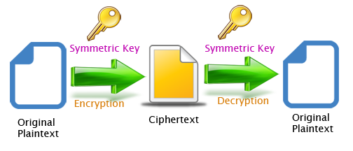
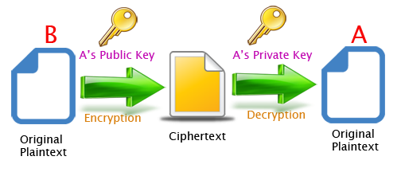

보안
대칭형 / 비 대칭형 알호 알고리즘
대칭형 알고리즘은 암호화와 복호화가 같은 KEY 값 으로 이루어 진다.

비 대칭형 알고리즘은 암호화와 복호화가 서로 다른 KEY 값 으로 이루어 진다.
이는 대부분 공개키 (Public Key) 와 개인키 (Private Key) 를 생성 하여 운영하는데 이는 다음과 같은 특징을 가진다.
A의 공개키를 이용하여 암호화된 데이터는 A의 개인키로만 복호화가 가능하다.
A의 개인키를 이용하여 암호화된 데이터는 A의 공개키로만 복호화가 가능하다.

| 대칭형 | 비대칭형 | |
|---|---|---|
| 특징 | 함호화 복호화가 동일한 키 | 암호화 및 복호화가 다른 서로다른 키 |
| 장점 | 속도가 빠르다 | 안정성이 높다 |
| 단점 | 암호키를 전달하는 과정에서 노출 우려가 있다 | 대칭키에 비해 느리다 |
| 예 | DES, AES | RSA |
참고자료
https://sungjk.github.io/2016/09/30/Security.html
https://javaplant.tistory.com/26
http://rigvedawiki.net/w/암호%20알고리즘
https://o-m-i.tistory.com/209
https://jusungpark.tistory.com/34
SHA-256
해싱 알고리즘의 대표적인 예인 SHA-256 은 해시 값으로 암호하여 복호화가 불가능 하다.
Example
import java.security.MessageDigest;
public class SHA256Password {
public void LockPassword(String password) {
try {
MessageDigest digest = MessageDigest.getInstance("SHA-256");
byte[] hash = digest.digest(password.getBytes("UTF-8"));
StringBuffer hexString = new StringBuffer();
for (int i = 0; i < hash.length; i++) {
String hex = Integer.toHexString(0xff & hash[i]);
if (hex.length() == 1)
hexString.append('0');
hexString.append(hex);
}
System.out.println(hexString.toString());
} catch (Exception ex) {
throw new RuntimeException(ex);
}
}
}
보안적인 관점
해시값은 복호화 할 수 없는데 이는 특정 문자열을 암호화하면 나오는 결과값이 다른 문자열을 해싱해서 나올수도 있기 때문이다.
홍길동 -> 홍
홍성대 -> 홍
위와 같은 원리로 결과값의 크기 (치역) 는 고정되어 있고 입력값 (정의역) 은 서로 다를 수 있기 때문이다.2² 과 -2² 의 결과 값이 서로 같은 것과 마찬가지인 원리로 결과값 4 를 기준으로 원본 데이터를 특정지을수가 없다.
하지만 대표적인 비밀번호 테이블을 구비하여 해당 결과 해시값을 대조하여 일일이 찾아보는 경우가 있다 (sha 함수 테이블)
해시값의 보안성을 높이기 위하여 값을 암호화 할때 Salt 값을 넣어 해싱을 함으로써 공격의 효율을 크게 저하 시키는 방법도 유효하다.
참고자료
https://yoo-hyeok.tistory.com/41
https://jusungpark.tistory.com/35